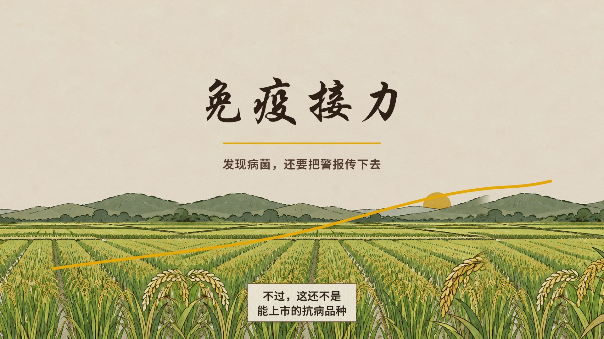
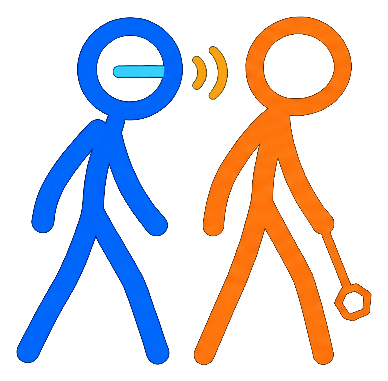
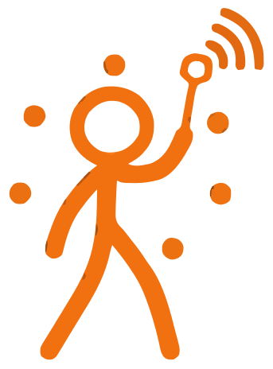
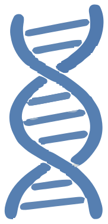

DESIGN STORY / 设计理念
让看不见的免疫，
成为一场接力。
从植物细胞里的识别与传信出发，我们用角色、色彩和互动，把复杂的科学过程讲成一个可以跟随、可以体验的故事。


01 / 故事与角色
把分子协作讲成接力
以“识别、传信、防御”为叙事线索，将 Bs2 想象为发现异常的哨兵，将 NRC 呈现为接收信号的伙伴。两个角色的配合，让抽象的免疫过程更容易理解和记住。

02 / 视觉语言
用色彩与动作传递信息
蓝色和橙色帮助区分不同角色，金色光波表现信号的传递。手绘形象与动态变化将科学概念转化为直观的视觉线索，让观众跟上故事节奏。

03 / 互动体验
从观看到亲手探索
影片建立整体认识，接力台让观众尝试组合基因，对照实验则邀请观众先预测、再验证。不同形式共同服务于理解，让学习过程更有参与感。
科学表达的边界
页面与动画中的角色、比例和动态均为帮助理解而做的艺术化示意；研究结果仍需放在具体实验条件与应用边界中理解。